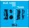

곡설명

MC몽-슈프림팀 등 더욱 화려해진 라인업! 대한민국 최고의 프로듀서 김건우,
힙합 프로젝트 앨범 블루브랜드 정규 2집(Part2) 출시
MC몽의 1집에서부터 4집까지의 프로듀서를 맡으며, ‘너에게 쓰는 편지’, ‘I Love You Oh Thank You’, ‘아이스크림’, ‘서커스’ 등의 히트작을 만들어낸 대한민국 최고의 프로듀서 김건우가 자신의 이름을 걸고 만들어낸 힙합 컨셉트 앨범 블루브랜드의 두 번째 앨범을 내놨다. 이미 김진표, MC스나이퍼, 도끼 등 힙합 최고의 실력파 뮤지션들과 함께 K.will, 브라운아이드걸스의 제아, 미료 등 최고의 가수들이 함께 한 블루브랜드 2집 Part1이 많은 사랑을 받은 가운데, MC몽, 슈프림팀 등 더욱 막강한 라인업을 추가해 완성한 정규 2집, Part2가 출시되는 것.